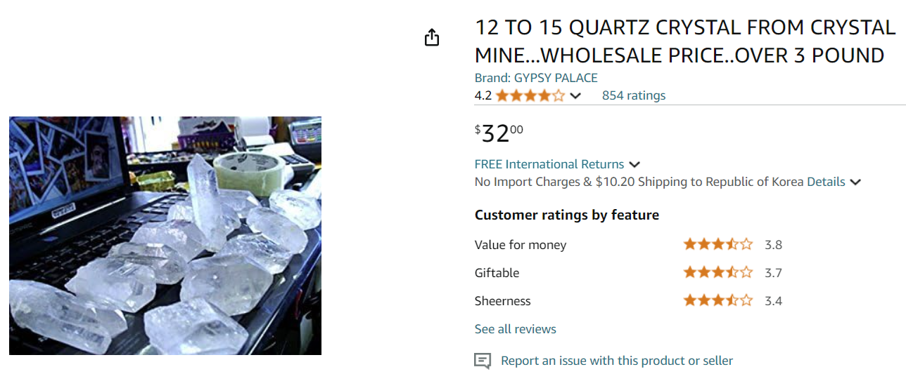
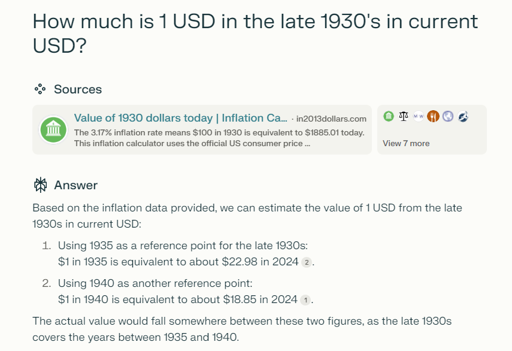
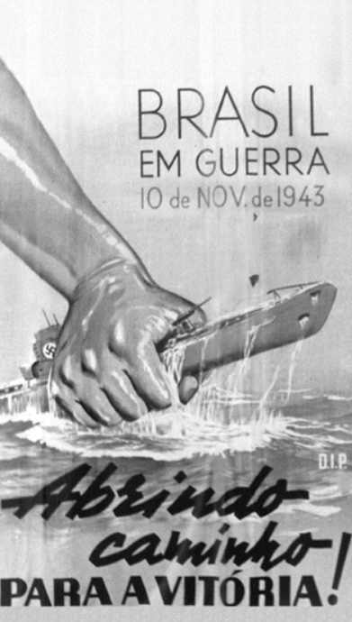
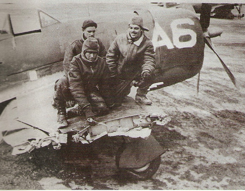
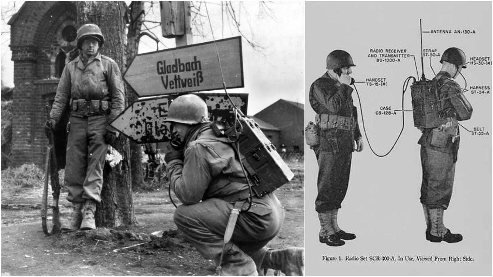
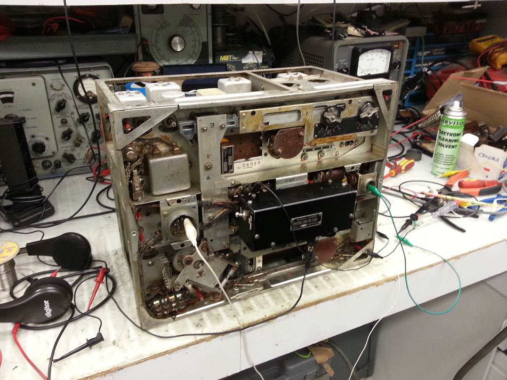
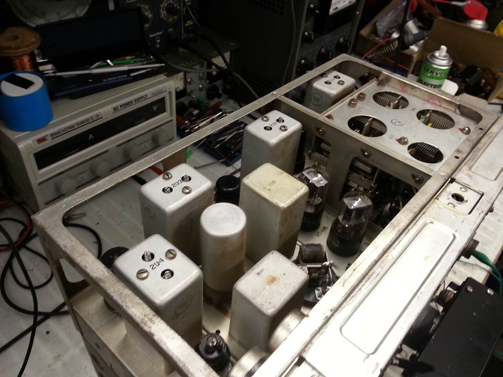
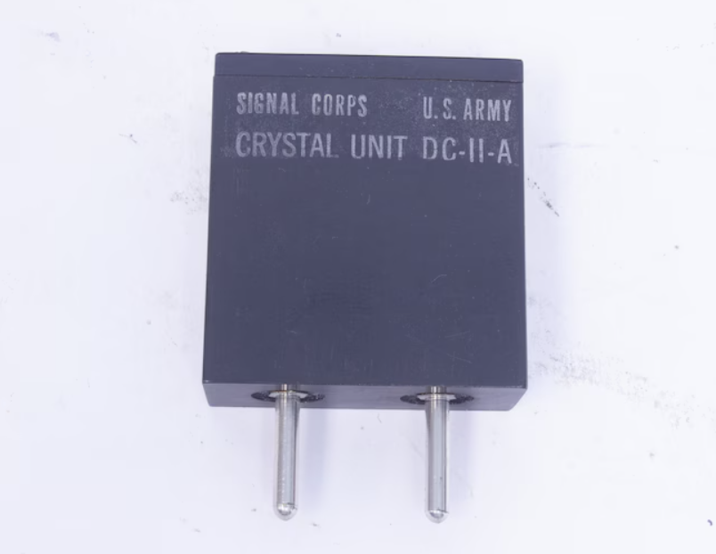

WW2의 수정 이야기 (4) - 독일군 무전기의 충격
게시: 2024-10-17T06:30:27+09:00
<수정을 싫어한 미군 장성들> 미군에서도 훨씬 간단한 구조를 가진 덕분에 고장도 적고 성능도 안정적인 수정 공진기를 군용 무전기에 사용하자는 의견이 많았음. 그러나 적어도 1939년 중반까지 미군 장성들은 그런 의견을 묵살. 장군님들은 (1) 유연성 (2) 비용 (3) 가용성의 세 가지 이유로 수정 공진기를 싫어했기 때문. 수정 공진기가 비싸다는 것은 충분히 이해가 가는 일. 수정을 보석이라고 말하기는 좀 그렇지만, 그래도 수정은 그 자체가 싼 물건은 아니었음. 게다가 지난 편에서 설명한 대로 1kg의 수정에서 20~30개의 수정 박판을 만들어내는데 비용이 30달러 정도 든다고 했으니, 공진기를 만들기 위한 수정 박판 1개의 가격은 이윤을 뺀 생산단가가 1~1.5달러 정도였다는 이야기. 1935년의 1달러는 지금의 23달러 정도니까, 간단한 구리 코일과 금속판으로 이루어진 인덕터 및 커패시터에 비해 비싼 물건은 맞는 셈.

(물론 품질과 크기 등에 따라 천차만별이겠지만, 아마존에서 3파운드 (대략 1.4kg)의 수정을 32달러에 판매 중)

(생성형 AI의 생산성 향상 효과에 대해서는 말이 많지만, 이런 재미 위주의 블로그 쓰는데는 확실히 큰 도움이 됩니다!) 그런데 유연성은 뭐고 가용성은 뭘까? 군용 무전기는 소대 단위의 무전기든 전함의 무전기이든 전투 상황에 들어가는 물건이니 파손이나 고장의 확률도 많음. WW2 전쟁 영화를 보면 항상 뭔가 주요 장비를 고치는 장면이 많음. 가령 RLC 회로의 경우 인덕터의 구리 코일이 끊어지면 그 구리선을 새로 감거나 때워서 무선 품질은 떨어지더라도 일단 통신은 되도록 만들 수 있음. 그런데 수정 공진기는 고장나면 갈아 현장에서의 수리 방법이 끼우는 것 외에는 방법이 없음. 바로 그게 유연성의 부족. 가용성은 문제가 더 심각. 수정 공진기를 만들기 위한 원재료는 당연히 수정. 그런데 수정 공진기에 쓸 정도로 face가 뚜렷한 고품질 수정을 대량으로 공급할 수 있는 국가는 딱 한 곳. 바로 브라질. 당장은 브라질에서 수정을 수입하는데 문제가 없었으나 만약 전쟁에 뛰어들고나서 U-boat 때문이든 외교 문제 때문이든 브라질에서의 수입이 끊기면 어떻게 할 것인가? 여기엔 정말 답이 없었던 것.

(잘 알려져 있진 않지만, U-boat 등에 의해 브라질 화물선도 종종 격침된 데다 전쟁이 진행될 수록 독일의 패배가 뚜렷해졌기 때문에 결국 브라질도 1943년 11월 연합군 일원으로 독일에 대해 선전포고. 이 포스터의 내용은 '브라질의 참전, 승리를 향한 길!')

(브라질은 입만 턴 것이 아니라 실제로 유럽 원정군도 보냈고 이탈리아 몬테 카스텔로 전투 등에도 참여. 위 사진은 독일군 대공포에 파손된 브라질 공군 소속 전투기와 정비사들.) <수정은 자본주의로 만들어진다> 이렇게 수정 공진기를 사용하는데 부정적이었던 미군의 입장을 바꾼 것은 대서양 건너에서 날아온 물건. 아직 WW2가 발발하지도 않은 1939년 여름 영국은 독일 육군의 장비 일부를 어떻게든 구해서 분석하고 있었음. 어떻게든 미국을 전쟁에 끌어들이려 노력하던 영국은 그런 식으로 얻은 독일 육군 무전기를 평가해보라며 미국에게 건네주었는데, 미군은 그걸 테스트해보고 충격을 먹음. 독일군 무전기에는 이미 수정 공진기가 사용되고 있었는데, RLC 회로로 만들어진 미군 무전기에 비해 품질이 월등했던 것. 물론 수정 공진기가 가지고 있던 유연성, 비용, 가용성 문제는 여전히 있었지만, 또렷한 음성이 나오는 무전기와 치직치직 거리며 뭔 소리를 하는지 잘 알아들을 수 없는 음성이 나오는 무전기가 실전에서 만들어내는 차이는 누구보다 장군들이 더 잘 알고 있었음. 1939년 여름, 미군은 무전기에 수정 공진기를 대거 채용하기로 결정. 이 결정을 내리게 된 이유는 훨씬 뒤인 1944년 7월, 미육군 소장 Roger B. Colton이 어떤 회의에서 발언한 아래 내용에 잘 나타나 있음. "우리가 수정 제어 무전기를 전술 장비에 광범위하게 채택한 것은 그 결과로 볼 때 너무나 잘 내린 판단이었다. 미육군은 수정 없이도 무선통신(radio)을 가지고 있었다. 이제 미육군은 통신(communication)을 갖게 되었다. 그게 차이다. 수정이 우리에게 비로소 통신을 가능하게 해주었다."

(미육군 최초의 'walkie-talkie' FM 무전기인 SCR-300. 1940년 개발된 이 무전기에도 수정 공진기가 사용됨. 대량생산에 들어간 것은 1942년이고, 실제로 전투에 투입된 것은 1943년.)
수정 공진기를 쓴 무전기를 채용하기로 했다고 당장 전군의 무전기를 교체할 수는 없는 일. 그러나 미군의 무전기 수정화 작업은 너무나 잘 진행되었는데, 이유는 또 영국. 당장 독일군과 피 튀기며 싸움질을 하던 영국은 전통의 동맹인 미국에서 이것저것 군수품을 사갔는데, 그 영국 조달청 주문서 중에는 항공기용 VHF (30~300 MHz) 송수신기를 만들어 납품해달라는 요청이 들어있었음. 그 무전기 설계도를 보면 송신에 4개, 수신에 4개의 수정 공진기가 필요했음. 영국이 OEM 방식으로 주문한 이 무전기는 나중에 약간의 수정을 거쳐 그대로 미육군 항공대의 무전기 SCR-522가 됨.
 
(미군이 거의 날로 먹은 셈인 항공기용 무전기 SCR-522. 미군에 처음 도입된 것은 1942년 이후.)

(SCR-522 내부에 사용된 수정 공진기 DC-11) 아직 참전은 안 했지만 영국과의 협업에 의한 전쟁 노력이 가속화되면서 미군은 수정 박판 생산량을 대폭 늘려야 한다는 것을 실감. 그러나 방법이 없었음. 그래서 일단 이들은 미육군 통신사령부(Chief Signal Officer) 산하에 일단 조직부터 만듬. 바로 Quartz Crystal Section (QCS). 지휘관이 고작 중령(James D. O’Connel)이었던 이 QCS에게 주어진 임무는 딱 하나. 수정 박판 생산량을 늘리라는 것. 그래서 오코널 중령은 미국 수정 제조업을 바닥부터 개혁하는 작업을 시작. 물론 여기에는 으리으리한 민간인 박사님들이 대거 채용됨. QCS가 맨 처음 시작한 일은 수정을 깎는 것...부터가 당연히 아니라 수정을 깎고 다듬을 민간업체를 찾는 것. 그런데 방법이 확실히 자본주의적. 군이 수정 박판 제조 역량을 갖춘 업체를 찾아나서는 것이 아니라, 반대로 수정 박판 제조 역량을 갖춘 업체가 QCS를 찾아오도록 한 것. 어떻게? 방송이나 신문 등에 '군 무선통신 장비에 수정이 필요하다'라는 것을 홍보함. 처음에는 애국적인 시민들이 다락방에서 썪고 있던 1930년대 아마추어 무선통신 장비 속에 사용된 수정 쪼가리를 찾아내어 기부랍시고 보내는 바람에 QCS에게 부담을 주었으나, 곧 '수정이 많이 필요하다면 군에서 수정 생산할 업체와 계약을 하려 하겠는걸?'이라고 생각한 제조업체들이 제발로 QCS를 찾아오기 시작. 문제는 이렇게 찾아온 제조업체 대부분이 수정에 대해 아는 것이 별로 없는 수정 초보자들로서, 그냥 전쟁통에 이런저런 규제로 인해 일거리를 잃고 공장 및 기계가 놀고 있는 상태였던 사실상 백수들이었다는 점. 이들을 데리고 어떻게 수정 박판 제조업을 시작하지? 당시 여기에 참여했던 Hallicrafters사의 사장 William Halligan는 훗날 아래와 같이 회고. "우리에겐 수정을 만들 숙련공이 없었다. 수정을 만들 장비도 없었다. 이런 상태에서 수정 대량 생산이 이루어진 것은 미국 산업계와 인센티브 제도가 만들어낸 기적이라고 할 수 있었다." 그러나 기적이 그냥 기도만 한다고 이루어지는 것은 아님. 물론 QCS에겐 방법이 있었음. (다음 주에 계속)